LIBERTY EQUALITY FRATERNITY 1789 June 20 Paris, the capital of France and one of the major cities in Europe, was drenched in rain. The political climate of Paris was quite hot. Representatives of the Third Estate were denied entry into Estates General, the French parliament. Then they gathered in a tennis court nearby. They vowed that they would not leave until a written constitution granting sovereignty to the people of France was drafted. In this lesson we discuss a popular uprising that had a decisive impact on the subsequent history of France and Europe.
Page 27
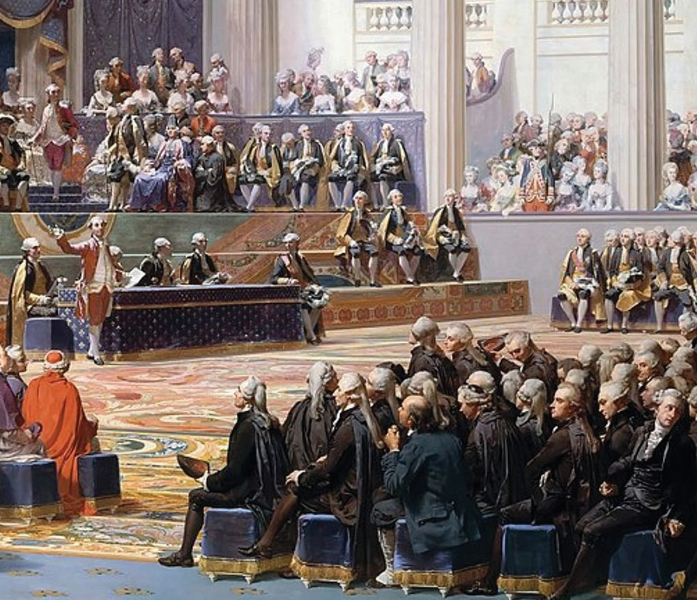
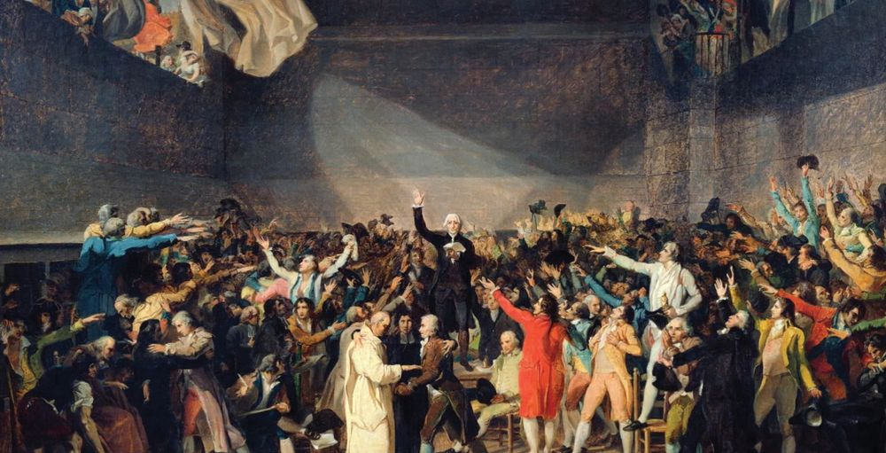
Page 28


Standard - X
Social Science I
Despotic Regime in France There was public uprising against the despotic regime that existed in France. The Bourbon dynasty was ruling France for decades. All the rulers of this dynasty were generally despotic. They believed in the divine right of rulers. Although there was a parliament called the Estates General, it was not summoned for a long time. The parliament was summoned only in 1614 for the last time. The most prominent of the Bourbon kings was Louis XIV, who declared, "I am the State."
Divine Right Theory According to the Divine Right Theory, the king is the representative of God. The king derives his authority from God. Hence, they are not accountable to the people, but to God. Those who supported the despotic rule believed in this theory.
Europe in 1789
Norway Denmark
Sweden
Russian Empire
Great Britain Ireland
Prussia
&
Poland
Netherlands German States Austria Hungary
France
Portugal
Spain
Venice Corsica Sardinia
Napples Sicily
Balkans The Ottoman Empire Greece
Asia Minor
Map 2.1 Europe in 1789
Look at the map 2.1 and locate France. Identify and mark the neighbouring states of France.
28
Page 29

Liberty Equality Fraternity
Corruption, extravagance and continuous wars waged by Louis XV, who succeeded Louis XIV, put the country and its people in misery. To find money for his extravagance he imposed new taxes on his subjects. Louis XVI, who came to power later did not pay much heed to governance. He believed that the country was safe in the hands of his loyal ministers. The queen, Marie Antoinette, constantly interfered in government affairs. The king pretended not to see the queen's extravagance. This made the people unhappy. Analyse and list down the reasons as to why the rulers of France became unpopular.
French Social System
Nobles fight, Priests pray, and the Commons pay This was a popular saying among the common people of France. What does it mean? Let us examine. French society in the 18th century was divided into three estates. The clergy in the first, the nobles in the second and the common people in the third estate.
The Clergy (First Estate) The Catholic Church in France was very powerful and wealthy. The church owned a large tracts of land. The clergy was exempted
29
Page 30

Standard - X
Social Science I
from all types of taxes. Moreover, they levied a tax called the tithe on the common peasants. One tenth of the total produce was remitted as tax. This made the common peasants resent the clergy.
The Nobles (Second Estate) The nobles held the highest positions in government and in the army. They were landowners as well. The nobles, who lived luxuriously, collected various taxes from the people. According to an act of 1749, all sections of people had to pay one twentieth of their income directly to the government as tax. This tax was known as Vingtième. The first two estates (the clergy and the nobles) got exempted from the tax by giving a small amount to the king as a gift. The priests and nobles never hesitated to oppose the monarchy to maintain their rights.
Various ways in which the nobles exploited the common people • Corvée: The right to make the common people work for three or four days a year without paying any reward. •
Banalité: The additional tax obtained from the monopoly of wine making and the rent for the compulsory use of the landlord's facilities for the manufacture of grape juice, bread, etc.
• Banvin: A monopoly tax on the wine produced in the territory of a lord. • Péage: A toll on bridges and roads. • Terrage: A special tax collected from the peasants during harvest. CDM Ketelby, A History of Modern Times from 1789
30
Page 31
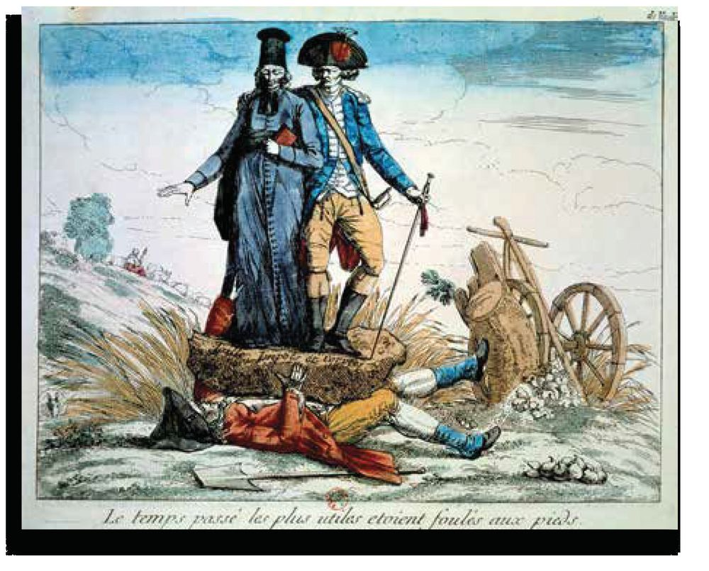

Liberty Equality Fraternity
The Commons (Third Estate)
Commoners crushed by Elites (Upper Class) who enjoyed special privileges
The condition of common people in 18th century France can be clearly understood from the illustration given above. The third estate in France comprised of the middle class, workers and peasants. They were known as Commons. Most of the third estate, which comprised of the majority of population, lived in poverty. Farmers got only a fraction of what they produced. They were obliged to pay various taxes to the king, the church and the nobles. In addition, they had to perform services that were unpaid and compulsory. Some of them included: • performing military service when it was necessary • providing free service for the construction of public roads, waterways, bridges, etc. Analyse the social system in 18th century France and prepare a note.
31
Page 32


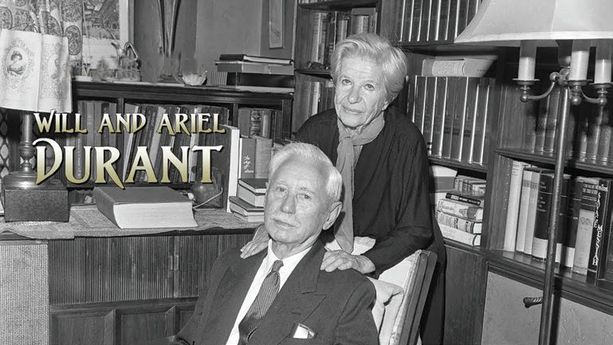
Standard - X
Social Science I
The Rise of the Middle Class
Gabelle This was a tax imposed on all products from the 13th century. From 15th century onwards it was levied only on salt. The gabelle was a very unpopular tax.
A middle class emerged in French society in the 18th century. The progress made in the agricultural and industrial sectors of France at that time led to the rise of the middle class. With the growth of the agricultural and industrial sectors, new cities emerged. Those who took advantage of the employment opportunities in the cities progressed economically and became part of the middle class. Domestic trade and the trade with the colonies made the industrialists in France wealthy. The major ports and cities were under the control of these wealthy people. They were also part of the middle class. The middle class thus formed also included doctors, lawyers and bankers. This middle class, like the common people also had to pay taxes to the government and the nobility. Despite their educational and economic advancement, they were not given the status or power they deserved in the administration and the army. In short, the middle class had deep discontentment.
The rise and discontent of the middle class decisively influenced the French revolution. Evaluate.
Will and Ariel Durant Famous historians Will Durant and Ariel Durant commented on the role of the middle class in the French Revolution: The essence of the French Revolution was the overthrow of the nobility and the clergy by a bourgeoisie using the discontent of peasants to destroy feudalism and the discontent of urban masses to neutralise the armies of the king. (Will and Ariel Durant Story of Civilisation-VOL-X Rousseau and Revolution Simon and Schuster New York 1967)
32
Page 33

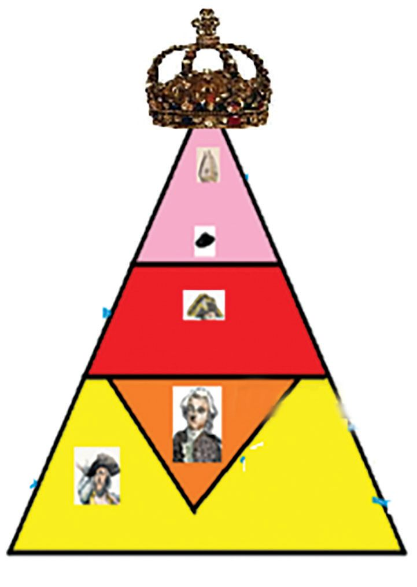
Liberty Equality Fraternity
Complete the given diagram by identifying the features of 18th century French society.
King Divine Right ................................................. .................................................
Clergy ...................................... ......................................
(First Estate)
(Second Estate)
Nobles .......................................... ...........................................
Commons
Middle Class
......................................... .........................................
......................................... .........................................
(Third Estate)
Economic Crisis In the 1770s, the French agricultural sector faced a severe crisis. This was due to a decrease in production. This led to an increase in the price of cereals and bread. Between 1730 and 1789, the price of cereals increased by 60 percent. However, the increase in wages was only 22 percent. A severe shortage of fodder saw a huge decline in livestock. This affected one third of the population adversely. According to the trade agreement signed by France with Britain, there was a huge reduction in import duties on British products. The French market was flooded with British products and made native artisans unemployed. Thus, disgruntled farmers, artisans, and other workers took to the streets against the government. To overcome the economic crisis, King Louis XVI borrowed huge
33
Page 34
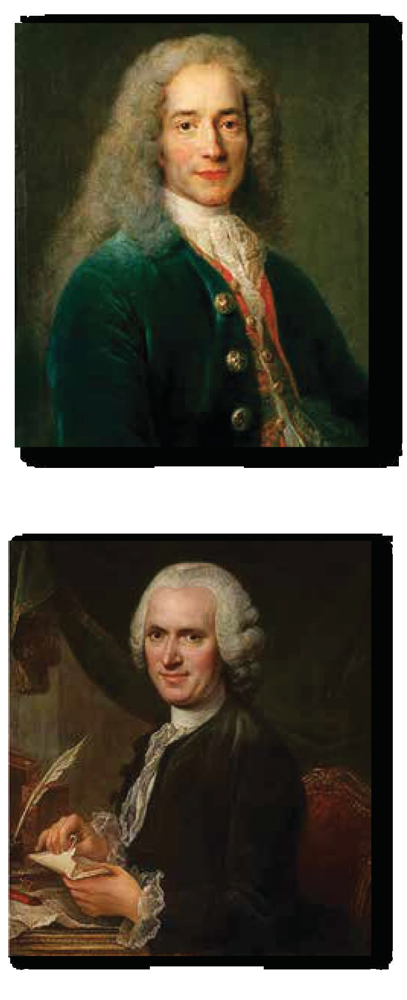
Standard - X
Social Science I
sums from bankers. In exchange for these loans, the government issued bonds. The empty coffers discouraged bankers from lending more money. One of the main reasons why the middle class, that included bankers, opposed the government was this inequality in taxation. They demanded that rules of taxation should be made equal among all citizens.
Influence of French Thinkers The French philosophers and their ideas convinced the people of the situation they were facing and inspired them to react against injustice. Let us get to know some of the thinkers who influenced the French people in this manner.
Voltaire Voltaire was a philosopher, historian, satirist, and a philanthropist. Though he was not an atheist, he constantly criticised the clergy through his articles. He was expelled from France due to his stance and writings.
Rousseau Rousseau was an educational philosopher and a political theorist. His work, The Social Contract, defined the relationship between the citizen and the state. Rousseau stated, ''The people created the king through a contract for their welfare and upliftment. However, the king has violated his responsibilities. Therefore, he has lost the right to rule.'' He argued that, ''good laws create good citizens.'' Rousseau opposed the existing power structure. His ideas were based on naturalism. ''Man is born free, but everywhere he is in chains,'' he said. Rousseau’s works inspired the French Revolution.
34
Page 35

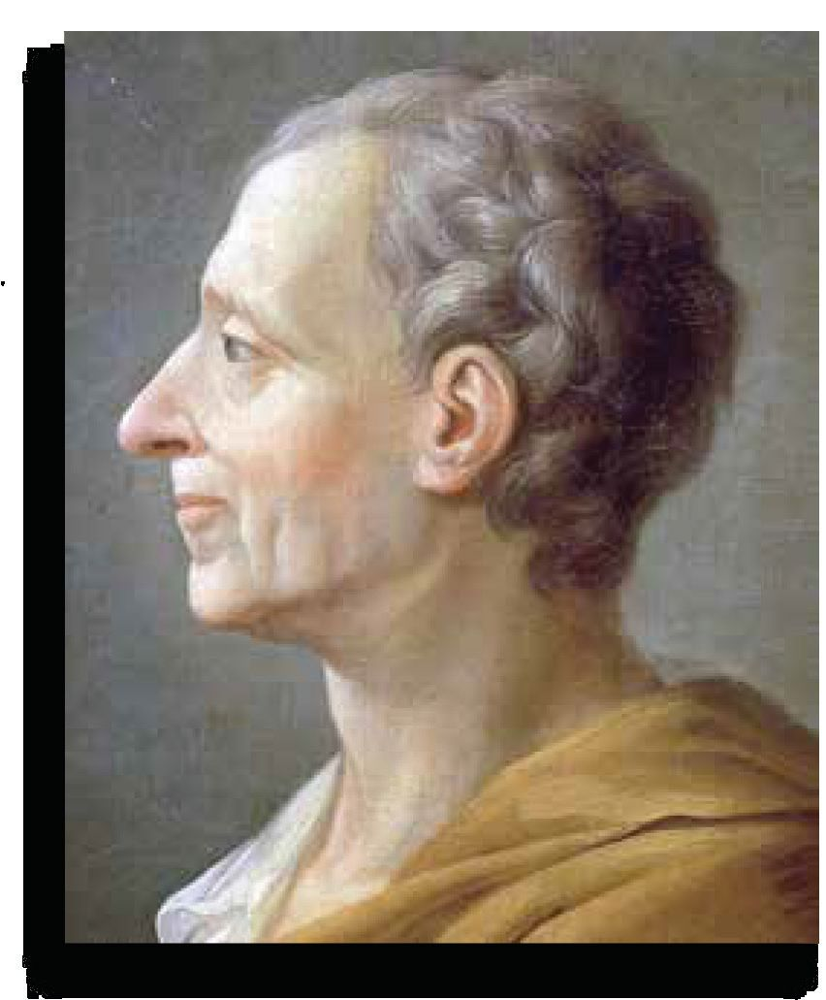
Liberty Equality Fraternity
Montesquieu Montesquieu criticised the evils of the church and the tyranny of the state. He advocated limited monarchy and proposed that powers of the government be divided into three branches: the legislative, executive, and judicial, to ensure the freedom of individuals. His famous work The Spirit of Laws, analyses the principles of government and the evolution of law and the constitution. The ideas of the British philosopher John Locke also had a decisive impact on the French. His famous work, Two Treatises of Government, rejected the divine right and tyranny of the king. Economists known as 'Physiocrats' also influenced the French people. Prominent among them were Turgot and Necker. Turgot, was an advisor to Louis XVI, who conceived many plans to improve the economic situation of France. These economic policies reflected the interests of the middle class. Encouragement of Salons and Coffee Houses agriculture and free trade of food items were important among them. In France, salons and coffee houses These reforms improved the financial situation of France to some extent. However, Marie Antoinette's unwillingness to cut back on spending resulted in enmity between her and Turgot. Due to the queen's opposition, Louis XVI dismissed Turgot from his ministry. Necker was appointed as the new advisor. He tried to continue the reforms of Turgot but was expelled due to the war with England. He also faced the opposition from the National Assembly. The advisors who were appointed after Necker also failed to improve the
served as centres for communication and political discussion. Educated and enlightened women organised salons in their homes. In these salons, they discussed the ideas of philosophers, writers, thinkers, and social reformers. These discussions inspired revolutionary ideas. Similarly, coffee houses became popular centres where ordinary citizens, journalists, and others held discussions regularly. Here, they planned revolutionary activities and criticised despotism.
35
Page 36

Standard - X
Social Science I
economic condition of France. Finally, the King was forced to change his decision and call Necker again .
Prepare a pictorial chart showing famous French philosophers and highlighting their ideas.
The Estates General Meets We have already discussed the severe economic crisis that France faced in the 18th century. To overcome this, it became necessary to impose new taxes. For this, Louis XVI, on the advice of Necker, decided to summon the French parliament, the Estates General. When the Estates General was convened again after 175 years, disputes arose regarding its organisation. Like the French society, the Estates General also was divided into three. The three estates met separately. The Clergy, that was only a small percentage of the French population, had two hundred and eighty five members. The nobility, which numbered only about one hundred and forty thousand of the French population, had three hundred and eight members in the House of Representatives. The common people, who constituted the majority had six hundred and twenty one members in the House of Representatives. The membership of the first and second estates was by inheritance. However, the members of the Third Estate were elected. The existing system was one vote for one house. The first two houses supported this. The reason for this was that if the first and second estates came together, they would have a majority to control the government. All the new representatives of the Third Estate presented the grievances and demands of the groups that they represented. However, King Louis XVI did not make any preparation to resolve these problems. The main reason for this was that the king did not have enough knowledge of the parliamentary system.
36
Page 37


Liberty Equality Fraternity
The Estates General was the cross – section of the French society. Substantiate.
The Tennis Court Oath Though representatives of the Third Estate demanded the meeting of all three estates together, the first two estates refused to do so. Following this, on 17 June 1789, the members of the Third Estate declared themselves the real representatives of the people of France and called their assembly the French National Assembly. With the support of the first two estates, Louis XVI closed the hall where this assembly used to be held and placed it under military guard. Led by Jean-Sylvian Bailly, the Abbé Sieyés and Mirabeau, the representatives of the Third Estate met on 20th June at the nearby tennis court. They declared that they would not leave until they draft a constitution for France. Tennis Court Oath This was later known as the Tennis Court Oath. This is the incident mentioned at the introductory part of this lesson. This session of the National Assembly later came to be known in history as the 'Tennis Court Assembly.' Prepare a script about the Tennis Court Oath and present it as a skit in the class.
The Fall of Bastille and the Beginning of the Revolution King Louis XVI dismissed his advisor Necker and ordered him to leave Paris. As the news spread like wildfire, the crowd that was provoked seized the granaries and bakeries in Paris.
37
Page 38

Standard - X
Social Science I
They amassed weapons and stormed the Bastille, the symbol of Bourbon despotism, on July 14, 1789, and within hours took control of the city of Paris. The fall of the Bastille is considered the beginning of the French Revolution. Violence spread to the French countryside and tax collectors also fell prey to the people's anger. Louis XVI fearing the wrath of the people, approved the laws passed by the National Assembly. Some of the reforms passed by the National Assembly are given below: • Abolition of slavery • Taking away the special powers vested on the nobility • Abolished the tax the people had to pay to the Catholic Church • Cancellation of additional taxes
Women and the French Revolution Food shortage and the policies of Louis XVI who did not cooperate with the National Assembly, forced women to join the struggle. Thousands of women marched to the Versailles palace in Paris, the residence of the Bourbon kings, carrying brooms, swords, spears, and guns. A large crowd accompanied them. They forcefully brought the king and his family to Paris. Louis XVI assured them that he would accept the decisions of the National Assembly without any reservations.
Goodbye Versailles (Adieu, Versailles!) Illustration of women’s march to Paris with members of the royal family.
38
Olympia de Gouche, a famous playwright and activist in France, was a strong female voice who advocated for women's rights during the Revolution. In her famous book, Declaration of the Rights of Woman and of the Female Citizen, she demanded that women
Page 39


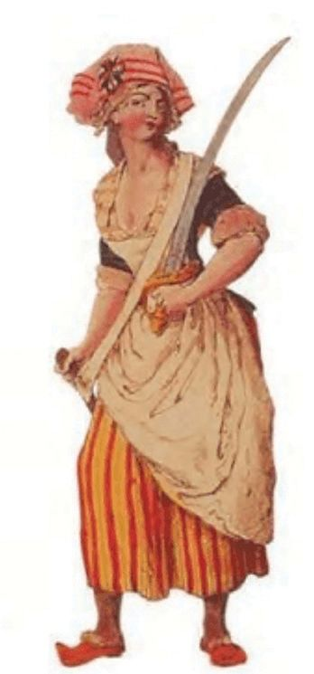

Liberty Equality Fraternity
should have the same rights as men. She stood for a social structure in which women had equal power and rights like men. Madame Jeanne Rolland was another woman who stood for women's equality. The right to property and the right to divorce were some of the achievements they gained through the women's rights movement.
Clothing as a symbol of protest The French nobility traditionally wore a type of pants called breeches that reached down to the knees. As a protest against the nobility, workers and peasants began to wear long trousers called pantaloons that reached down to the ankles. They came to be known as sans-culottes, and pantaloons became a symbol of the support for the revolution. The fact that more people started wearing pantaloons was evidence that the revolution had become popular. The Phrygian cap was also a symbol of the revolution. Workers wore the red Phrygian cap to signify that they had been freed from slavery.
Sans-culottes couple
Red Phrygian cap
New Constitution
Men are born and remain free and equal in rights The above quotation is taken from the Declaration of Human Rights, which was given in the preamble of the Constitution prepared for France by the National Assembly. The French Declaration of Human Rights (Declaration of the Rights of Man and of the Citizen) in the preamble is an important result
39
Page 40

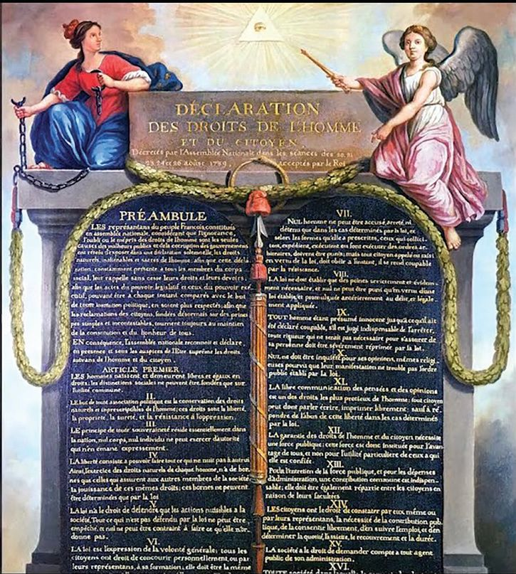
Standard - X
Social Science I
of the French Revolution. Let us examine the main ideas in the Declaration of Human Rights of France in 1789. • Men are born and remain free and equal in rights. • The aim of all political associations is the preservation of the natural and inseparable rights of man. These are the rights to liberty, property, security, and resistance to oppression • The principle of all sovereignty resides essentially in the nation. Liberty consists in the freedom to do everything which injures no one else. •
The law can only prohibit such actions as are hurtful to the society
The French National Assembly implemented many reforms in the social, economic, and political spheres of France. The most important of these were: • Implemented a unified constitution throughout the country • Issued a new paper currency called 'Assignat' • Confiscated the properties controlled by religious leaders • Declared complete religious tolerance • Clergy became salaried government employees
ASSIGNAT The Assignat was the name of a paper currency issued in France in 1789. It was intended to be used as a bond and currency to stabilise the French economy and to pay off the national debt. Over time, the government began to print Assignat excessively to cover its expenses. This led to massive inflation and a rapid devaluation of the currency. By 1796, the Assignat had lost its value.
40
Page 41


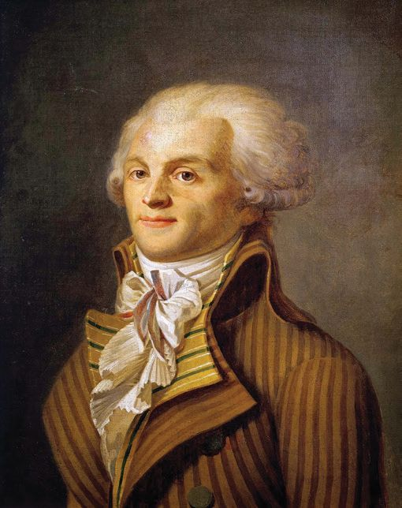
Liberty Equality Fraternity
Discuss how the Universal Declaration of Human Rights influenced the reforms of the National Assembly.
Reign of Terror and the September Massacre In 1792, a new governing body called the National Convention came into being in place of the National Assembly. The National Convention declared France a republic and executed Louis XVI. The Jacobins seized control of France, that had become a republic. When the major powers of Europe like Britain, Austria, and Russia, attacked France, the 'Committee of Public Safety' was formed to deal with the situation. Led by this committee, a reign of terror began in Paris. The administration of the city of Paris was in the hands of Danton, Hébert, Marat, and Robespierre.
Jacobins and Girondists The Jacobins were a political and social group that emerged during the French Revolution. They met at the Jacobin Convent in the early days. That is why they were called Jacobins. Robespierre was a major leader of this group. The Jacobins had a great influence on French politics at the time. Another major group that participated in the French Revolution were the Girondists. Some of them were members of the National Assembly who came from the Gironde region in south western France. Unlike the Jacobins, they took a moderate position. They were representatives of the upper classes, who were landowners and merchants.
Thousands of people including nobles, priests, and supporters of the king, were branded traitors and imprisoned. When the prisons overcrowded, about one thousand and five hundred people were killed on the streets of Paris. This is known as the infamous 'September Massacre.' The guillotine was a special machine made to kill people. The leaders of the Republic, who were responsible for the deaths of many thousands during the Reign of Terror, were also guillotined later. The revolutionaries abandoned the current calendar and implemented a new revolutionary calendar.
Robespierre
41
Page 42


Standard - X
Social Science I
Revolutionary Calendar This calendar was adopted in France in October 1793, replacing the existing Gregorian calendar. The day France became a republic, i.e. 22 September 1792, was the first day of the calendar. This calendar had three decades of ten days instead of seven-day weeks. This was a completely secular calendar. This calendar was in use in France until the twelfth year of the Revolution (1801).
Guillotine The guillotine was a gruesome instrument used during the French Revolution (1789-1799) to instantly behead people. It is named after Dr. Joseph-Ignace Guillotine, who proposed the idea. King Louis XVI and Queen Marie Antoinette were also guillotined. Robespierre, a revolutionary leader during the Reign of Terror, also was guillotined.
A New Constitution With the end of the Reign of Terror, a new constitution came into being in France in 1795. Based on this, a committee consisting of five members carried out the administration. This system of government was called the Directory. But soon, corruption and mismanagement led to the collapse of the Directory. The people were pushed to utter poverty and lost faith in the new government.
Consequences of the French Revolution The most obvious result of the French Revolution was the collapse of feudalism in France. The laws of the old regime disappeared with the revolution. The land owned by the church became the property of the middle class. The land under the nobles were confiscated and all kinds of benefits were abolished. With the introduction of a unified system of weights and measures (the metric system), the inaccuracy in weights and measures ended.
42
Page 43

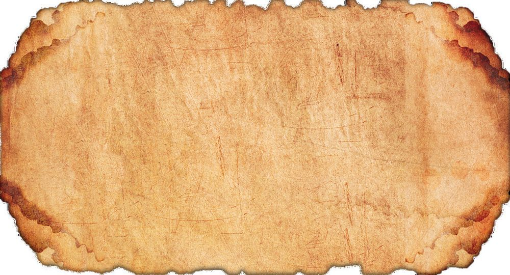
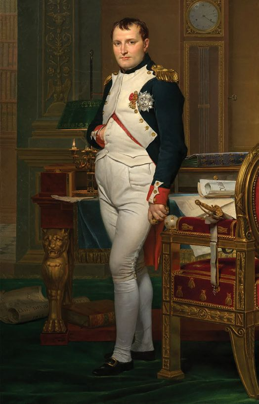
Liberty Equality Fraternity
The concept of modern nationalism is a contribution of the French Revolution. It was only after the French Revolution that the existence of a nation began to be expressed through national character, not through monarchy. The concept of the nation in its full sense came into being after the French Revolution. This declared the idea that France was not just a geographical expression, but the entire people of France. Another concept that grew with nationalism is democratic system of governance. It was after the French Revolution that the foundation of democratic rule based on Rousseau's idea of the sovereignty of the people was realised. The French Revolution also influenced the struggles for national independence that took place in Asia and Africa in the nineteenth and twentieth centuries. Analyse the consequences of the French Revolution and prepare a note.
Napoleon I found the crown of France in the gutter. I picked it up with the tip of my sword and cleaned it, and placed it atop my own head These are the words of Napoleon Bonaparte, who seized power by overthrowing the Directory that existed in France. What can be understood from these words of Napoleon? These words of Napoleon referred to the French society that had fallen into anarchy and his seizure of authority over France. Napoleon was a Brigadier General in the French army. He established a new administrative system consisting of three consuls instead of the Directory. Napoleon himself was the First Consul. Soon, Napoleon declared himself the Emperor of France. Let us take a look at the administrative reforms he implemented in France.
Napoleon Bonaparte
43
Page 44

Standard - X
Social Science I
Reforms Legal reforms
Changes By Napoleonic Code, Feudal laws were abolished, and equality and religious freedom were recognised.
Concordat (An agreement As per the agreement with the Pope, the freedom between Napoleon and the of the Catholic Church was restored. Other Pope) religious groups were also granted freedom.
Educational reforms
Steps were taken to universalise education. Government-run schools called lycee were established. The goal of this was to produce educated people for government service and the army. A national university system called the University of France was established. Through this system, the state controlled the country's education.
Economic reforms
Established The Bank of France and implemented a unified currency system.
Military reforms
The army was reorganised into several battalions.
Napoleon's administrative reforms laid the foundation of modern France. Discuss this statement and prepare a note. Napoleon waged several wars with the aim of eliminating the enemies of France. He defeated countries like Austria and Prussia in the war. Napoleon's arch enemy was Britain. He devised plans to destroy Britain economically as he knew that it would be impossible to conquer Britain which was a superior naval power. The plan formulated for this purpose is known as the 'Continental System'. According to this, countries that were under the control of France or the friendly nations of France were banned from trading with Britain. Napoleon was not able to achieve complete success in this. Moreover, this led to a series of battles with Britain. This eventually led to the defeat of Napoleon in the Battle of Waterloo in 1815.
44
Page 45

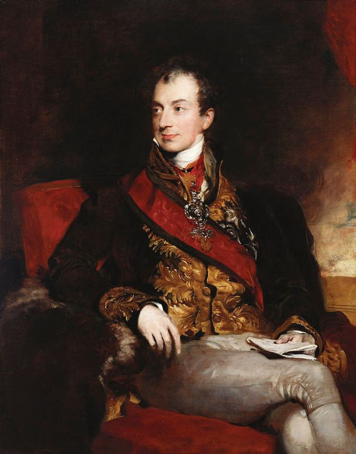
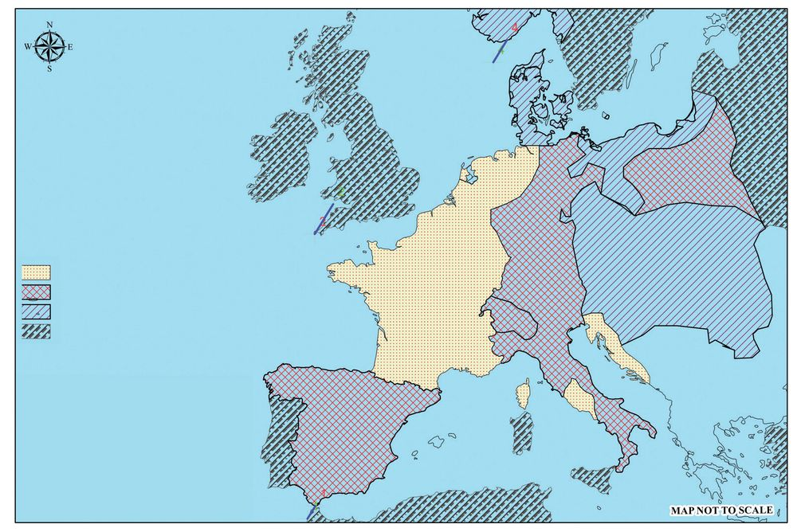
Liberty Equality Fraternity Norway Sweden Russia
Denmark Prussia
United Kingdom of Britain and Ireland
French Empire States under the control of Napoleon States Allied with Napoleon States Hostile to Napoleon
French Empire
Confederation of the Rhine
Grand Duchy of Warsaw
Swiz
Kingdom of Portugal
Kingdom of Spain
Empire of Austria Ill
Italy
yr
ian
Pr
ov
Corsica Rome
inc
es
Ottoman Empire
Sardinia Sicily
Map 2.2
Look at Map 2.2 and list the places where Napoleon established his dominion.
The Map of Europe Redrawn After Napoleon's defeat, the countries in Europe met in Vienna, Austria in 1815 and took some important decisions. This is known as the Congress of Vienna. This conference was led by the Austrian Chancellor Metternich. With the Congress of Vienna, French dominance in Europe ended.
Major Decisions of the Congress of Vienna • Restore the monarchies that existed in the countries of Europe including France before the French revolution. • Restore the Bourbon monarchy in France.
Metternich
• Recognise Britain's naval supremacy and Russia's dominance in Eastern Europe. •
Recognise Austria's dominance in Central Europe.
45
Page 46


Standard - X
Social Science I
Tree of Liberty The 'Tree of Liberty' was a figurative expression in the American struggle for independence. In France, it was literally used during the revolution. Trees were planted in public places as a symbol of freedom. Red Phrygian caps were considered a symbol of liberation, and were hung on the trees. Tipu Sultan, the ruler of Mysore, who was constantly in conflict with the British, planted the Tree of Liberty in his capital, Srirangapatnam. By planting the Tree of Liberty, Tipu Sultan demonstrated his affinity for the ideas of the French Revolution and his hostility to the British.
The French Revolution is one of the most important events that has influenced modern world history. It was a movement by the common people and the middle class of France for the rights they were denied. The ideas put forward by the French Revolution influenced the world later on.
Extended Activities • Create a digital presentation which includes descriptions of the major events of the French Revolution. • Evaluate how the French Declaration of the Rights of Man and of the Citizen influenced later freedom struggles. • Prepare a digital presentation that includes the timeline of the French Revolution, the leaders of each phase of the revolution, and their ideas, and then present it in the class.
46